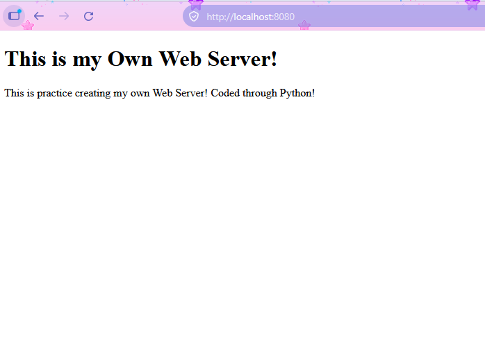

Building My Own Web Server!
In this project, I created my own private server through Python code. In this web server the example can be accessed on your local network only. This can either be localhost or another network host. You could serve it cross location with a vpn.
Here are some more details about what I have learned! In Python, this spans a spectrum from a one-line command for quick local file sharing to writing a server from scratch using raw network sockets to understand how the internet works under the hood.

import socket
SERVER_HOST = "0.0.0.0"
SERVER_PORT = 8080
server_socket = socket.socket(socket.AF_INET, socket.SOCK_STREAM)
server_socket.setsockopt(socket.SOL_SOCKET, socket.SO_REUSEADDR, 1)
server_socket.bind((SERVER_HOST, SERVER_PORT))
server_socket.listen(2)
print(f'Listening on port {SERVER_PORT}...')
while True:
client_socket, client_address = server_socket.accept()
request = client_socket.recv(1500).decode()
if not request:
client_socket.close()
continue
print(request)
headers = request.split('\n')
first_header_components = headers[0].split()
if len(first_header_components) < 2:
client_socket.close()
continue
http_method = first_header_components[0]
path = first_header_components[1]
if http_method == 'GET':
if path == '/':
try:
with open('index.html', 'r') as fin:
content = fin.read()
response = 'HTTP/1.1 200 OK\n\n' + content
except FileNotFoundError:
response = 'HTTP/1.1 404 Not Found\n\n<h1>404 Not Found: index.html missing</h1>'
else:
response = 'HTTP/1.1 404 Not Found\n\n<h1>404 Not Found</h1>'
else:
response = 'HTTP/1.1 405 Method Not Allowed\n\nAllow: GET'
client_socket.sendall(response.encode())
client_socket.close()